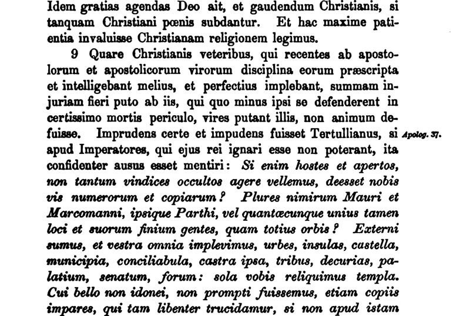
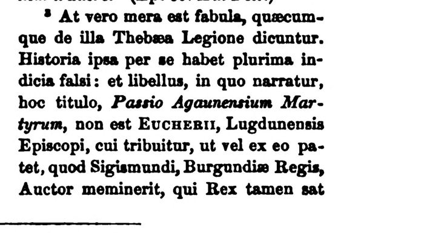

“Plures nimirum Mauri et Marcomanni”: Christians who could have fought (book I, ch. IV, § 7, pp. 185–186)
Latin, with Whewell’s abridged English: Cambridge 1853, vol. I, pp. 185–186, scans n257–n258.

9 Therefore I think the greatest injustice is done to the early Christians, who, fresh from the teaching of the apostles and apostolic men, understood their precepts better and fulfilled them more perfectly, by those who think that what kept them from defending themselves in the most certain danger of death was want of strength, not want of will. Tertullian would surely have been rash and shameless to dare to lie so confidently before emperors who could not have been ignorant of the matter: “For if we wished to act as open enemies, not merely as secret avengers, would we lack the strength of numbers and forces? Are the Moors and Marcomanni and the Parthians themselves, or any nations however great, confined to one place and their own borders, more numerous than those of the whole world? We are strangers, and we have filled everything of yours: cities, islands, forts, towns, assemblies, the camps themselves, tribes, decuries, the palace, the senate, the forum. We have left you only the temples.” …
Original Latin
9 Quare Christianis veteribus, qui recentes ab apostolorum et apostolicorum virorum disciplina eorum præscripta et intelligebant melius, et perfectius implebant, summam injuriam fieri puto ab iis, qui quo minus ipsi se defenderent in certissimo mortis periculo, vires putant illis, non animum defuisse. Imprudens certe et impudens fuisset Tertullianus, si apud Imperatores, qui ejus rei ignari esse non poterant, ita confidenter ausus esset mentiri: Si enim hostes et apertos, non tantum vindices occultos agere vellemus, deesset nobis vis numerorum et copiarum? Plures nimirum Mauri et Marcomanni, ipsique Parthi, vel quantæcunque unius tamen loci et suorum finium gentes, quam totius orbis? Externi sumus, et vestra omnia implevimus, urbes, insulas, castella, municipia, conciliabula, castra ipsa, tribus, decurias, palatium, senatum, forum: sola vobis reliquimus templa. …
Whewell’s own abridged English for this paragraph is just: “9 And so the ancient Christians teach: Tertullian; Cyprian; Lactantius; Augustine. [See the passages.]” Grotius goes on to Cyprian (none of us, when arrested, resists or avenges himself, “although our people are very many and numerous”), Lactantius and Augustine, and then (§ 7.10) to the Theban legion: in Whewell’s English, “So the Theban legion did not resist when decimated for refusing to sacrifice.”
“Mera est fabula”: a footnote on the Theban legion (p. 186)
Latin footnote: Cambridge 1853, vol. I, p. 186, scan n258. The note continues on the next page (not read), so its signature is not given here; the editorial notes in this edition include Jean Barbeyrac’s, signed “J. B.”.

But everything that is told of that Theban legion is mere fable. The story itself bears many marks of falsehood; and the little book in which it is told, under the title Passion of the Martyrs of Agaunum, is not by Eucherius, bishop of Lyon, to whom it is ascribed, as appears if only from the fact that its author mentions Sigismund, king of Burgundy, a king who nevertheless [lived] long …
Original Latin
At vero mera est fabula, quæcumque de illa Thebæa Legione dicuntur. Historia ipsa per se habet plurima indicia falsi: et libellus, in quo narratur, hoc titulo, Passio Agaunensium Martyrum, non est Eucherii, Lugdunensis Episcopi, cui tribuitur, ut vel ex eo patet, quod Sigismundi, Burgundiæ Regis, Auctor meminerit, qui Rex tamen sat …
Lecky (note 30) gives Grotius’s instances as “striking”, and the Theban legion was one of them; the editor printing Grotius beside it already thought that instance legendary.
Backlinks
Every place in Rationalism in Europe that links to this page (generated automatically when the site is built).